La finestra principale
La finestra principale sotto rappresentata possiede aree funzionali dedicate a:
· definizione dei dati del problema
· definizione delle modalità di esecuzione

Definizione dei dati del problema
Tipo di problema
I tipi di problema che possono essere risolti sono i seguenti:
a) punto di ebollizione
b) punto di rugiada
c) equilibrio liquido-vapore [1]
d) proprietà di una miscela gassosa
e) proprietà di una miscela liquida
f) curva di riscaldamento (evaporazione)
g) curva di raffreddamento (condensazione)
Variabili indipendenti
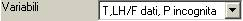
In funzione della scelta del tipo di problema, può essere necessario specificare quali sono le variabili indipendenti (ovvero date) e quali sono le variabili dipendenti (ovvero incognite) del problema.
La combinazione dei due dati permette al programma la determinazione del “codice IND”, al quale si rimanda per una spiegazione delle abbreviazioni usate in questa casella di selezione a discesa.
In alcuni casi è necessario definire le variabili indipendenti a partire da due set di selezione separati: in questo caso apparirà, al posto della casella “Variabili”, una coppia di caselle, come sotto rappresentato:
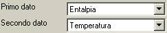
Dati numerici
A seconda delle varibili indipendenti determinate al paragrafo precedente, appariranno una o più caselle di testo come sotto rappresentato.
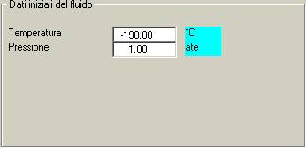
Opzione ‘da calcolo precedente
Frazione idrocarburi in fase liquida su totale
Frazione acqua liquida su totale
Nel caso della generazione di curve di riscaldamento/raffreddamento è inoltre necessario definire i dati presenti nel riquadro apposito:
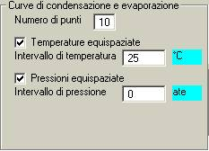
Qualora si volesse definire una curva di riscaldamento/raffreddamento lungo una trasformazione qualsiasi definita nel piano (p,T), si dovrà togliere il segno di spunta ad una o entrambe le scelte di intervalli equispaziati. Apparirà allora un pulsante di comando che permetterà di accedere alle finestre di assegnazione punti.
Definizione delle modalità di esecuzione
Unità di misura
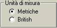
La scelta del sistema di unità di misura è valida sia per la fornitura dati in ingresso che per la presentazione dei risultati.
Costanti di equilibrio

“Costanti di equilibrio” è un’espressione sintetica per indicare le scelte previste a livello delle equazioni da impostare per la risoluzione del problema dell’equilibrio termodinamico liquido-gas di miscele di componenti.
Tra le due possibilità previste (Soave e Peng-Robinson), la scelta consigliata, in mancanza di informazioni più specifiche, è Soave.
Costanti critiche
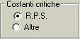
Questa opzione ha effetto sui valori di libreria assunti per la pressione critica, la temperatura critica, ed il fattore di acentrismo. Si consiglia:
· di scegliere sempre la prima opzione
· di controllare, ove disponibili dati alternativi, i valori assunti per il fattore di acentrismo. La stampa dei valori assunti dal programma si ottiene settando la corrispondente opzione del menu ‘Preferenze’.
Presenza di acqua liquida
Misure molari / ponderali
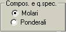
(Qui ci va una spiegazione)
Pressioni relative/assolute
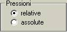
Costanti di interazione
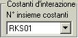
Formazione di idrocarburi in fase liquida
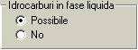
Entalpie ed entropie ideali

La scelta consigliata è 'API Handbook'. La scelta 'API Project 44' è indicata per le basse temperature.
Controllo iterazioni
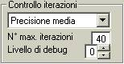
E’ consigliabile adottare i valori di default per la precisione e per il numero di iterazioni. Il livello di debug è il livello di chiamata delle routines fino al quale si arriva nel riportare una messaggistica nell’output a a stampa. Il livello 0 corrisponmde ad un’esecuzione normale senza messaggistica di debug.
Esecuzione (pulsanti di comando)
Procedi

Tramite questo pulsante si lancia il calcolo basato sulle opzioni e sui dati selezionati.
L'esito generale dei calcoli eseguiti viene riportato nella finestra di diagnosi

Rapporto

Tramite questo pulsante si visualizza il rapporto completo dei risultati ottenuti. Tale rapporto è gestito attraverso WinWord.
Presentazione dei risultati
La finestra di diagnosi

In questa finestra viene visualizzato un rapporto circa l'esito delle elaborazioni eseguite dal motore di calcolo di Wald.
I risultati sintetici
Nella finestra dei dati iniziali appariranno, qualora il calcolo sia andato a buon fine, delle caselle a sfondo giallo, con l’indicazione dei valori calcolati.
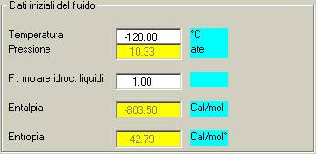
Risultati per la fase liquida
Risultati per la fase aeriforme
Una visione completa dei risultati ottenuti si otterrà tramite la pressione del pulsante ‘Rapporto’.
Nel caso delle curve di riscaldamento/raffreddamento verrà automaticamente richiamata una finestra per la gestione/visualizzazione dei dati calcolati sotto forma tabellare e sotto forma di grafico.